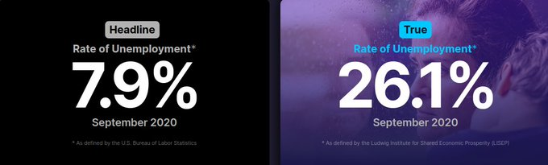

Week 42
One of our TOP stories this week came from DLR in Germany as they unveiled their new Safe Light Regional Vehicle (SLRV) with #FuelCells and #Hydrogen ride--https://t.co/uNFJPglIaC #HydrogenNow #FuelCellsNow #decarbonise #ZeroEmissions #cleantech #fuelcell #H2 @fuelcellsworks pic.twitter.com/11x7Ijqu2r
— FuelCellsWorks (@fuelcellsworks) October 17, 2020
"[EU and Canada traded] nearly $165 billion worth of goods and services flowed between us last year"
"As it stands, the U.K. exports and imports goods and services worth just over £1 trillion ($1.3 trillion) a year [with the EU]"
Neither Canada or Australia are good comparisons for UK / EU trade IMO.
A study sponsored by an airline and an aircraft manufacturer says flying is a low-Covid risk. Maybe. Or it could be Kellogg's sponsoring “science” to tell us breakfast is the most important meal of the day. https://t.co/UEGgHDyDBx
— William Noah Glucroft (@wnglucroft) October 17, 2020
Power calc comes from
$P = \frac{d W}{d t} = F \cdot \frac{d s}{d t} = F \cdot v$
Multiply force with speed, get power. Driving uphill is hardest part, fighting against a portion of grav. I left out acceleration to that speed, left out friction, air resist.
Haha.. I am getting good at this.. someone said my kid has Power Wheels, and I check out its battery, 12 V, 30 Amp = 360 Watts power, how much power for uphill drive?
m = 40+40 # car, kid
v = 10/3.6 # 10 km/h
print (int(m*9.8*np.sin(np.deg2rad(20))*v), 'Watt')
744 Watt
Calc says this thing wont even drive uphill at modest speed.
Then I see this video.
Good one
"Had a colleague with PhD in solid mechanics, and he worked for sometime on Computational Fluid Dynamics at a company, and was finally entrusted with quality work at a SW dev Company. ...The joke was 'after working in solid and fluid, his work was all gas now'"
So they say Mark Cuban is now China's bitch?
😆 😆 😆
🔥 🔥 🔥
"@gabriel_zucman
Not a big loss of tax revenue, luckily
'@davidmackau Trump says he may leave the US if Biden wins'"
You did not work a million times more than the next guy.
You probably aren't that smart either.
You are likely a one-trick pony which fit to the backdrop of the current shit sandwich that is called "the system", that's all.
"But I worked hard for my billions, I am smart, I deserve them"
Billion level wealth creates power disparities in society. Take that shit gov. Without regard to what you do with that money later. Zero-sum. Gov wins, other side loses.
"Billionaire: Why do they want to take my billions?"
Yea.. Europeanize bitch. Also that sport where you almost never kick the ball around is not "football".
I have a feeling some corners in US have a fear of being usurped culturally by Europe. Pet conspiracy theory of mine is a secret clique (!) had girls play soccer (huge in Europe) so they could poo poo the sport and say "yeah girls play that sport here duuude!
We need more action in US. I am talking EU Green New Deal level.
"At EU level, with the announcement of the EU Green Deal in December 2019, the framework of policies tackling the hydrogen industry is profoundly changing. Thought as the EU’s ‘new growth strategy’, the Green Deal is a high-level political strategy which aims at carbon neutrality in the EU by 2050. To achieve this objective to be enshrined in the European Climate Law, the Green Deal encompasses all sectors of the economy"
Governor Fredo.. This guy is actually dumber than his brother at CNN. He thought he'd just snatch the nomination through some TV time? How f-ing deluded is that?
"@StuDoesAmerica
Andrew Cuomo’s new book is out, a fictional tale in which he proclaims himself master of coronavirus and viral savior of New York. But that’s not even close to true"
"Thai protesters defy emergency law to call for reforms"
The Guardian: "The failure of governments to tackle a three-decade rise in preventable diseases such as obesity and type 2 diabetes has fuelled the Covid-19 pandemic and is stalling life expectancy around the world, a comprehensive study has found"
That's right Crisp Chrispie.. you messed up
"Chris Christie says he was wrong not to wear a mask at the White House, where he and President Donald Trump both came down with the coronavirus"
I approve this message
apt remove cmake vim
— SWIFT Simulation (@SwiftSimulation) October 15, 2020
"Houston Tech Mogul Indicted for ‘Largest-Ever Tax Charge’... Robert Brockman is accused of hiding $2 billion offshore"
😆 😆 I said that didn't I? C'mon man, what's funnier than calling the Pope himself a paisan..? I was joking... Of course he is Argentinian, if we go by the culture code approach.
"This Pope is from Argentina, an Italian immigrant but by your culture codes he is Argentinian. Why do you keep calling him a paisan?"
Good going PF.. The P of VC, jammin
Possibly.
And if it does, UBI could be its first leftist program.
"Would 3W politics have a right and left?"
DJT net popularity down to -%11
Daily Poster: "As high rates of police shootings and brutality in California have prompted demands for police accountability, law enforcement unions have dumped nearly $1 million into a state assembly race to try to unseat a Bernie Sanders-backed progressive legislator and longtime criminal justice reform leader, records show"
Ok.. The Expanse Season 5 trailer looks better. S4 was really bad.
Where is The Orville? Trek is shot to shit, we don't have much good scifi left.
This battery business will get ugly, everyone best head for the exits.. Based on typical 10KW energy consumption per person, a day of storage and with 60kg of lithium / 70kWh battery means demand will be 90 times greater than world lithium reserves. This road simply cannot work. Batteries are the business of 1 percenters, like this cretin fuck. Lithium is no problem for that guy, his father owned an emerald mine in apartheid South Africa, so stealing national riches of a country is in his blood. Others won't be able to stomach it, and trading one rare, natural resource (oil) for another (litihum) will start looking increasingly stupid as we dive deeper into the green revolution.
We’re pleased to announce a new purchase order – our first in Poland – for our H2Station™ fueling solution. Check out our press release for more info: https://t.co/23v6hIFfre pic.twitter.com/WbDhc9WneI
— Nel Hydrogen (@nelhydrogen) October 14, 2020
📚View the #Fuelcells and #Hydrogen Observatory chapter and track changes in the structure of hydrogen supply and demand in Europe.
— Fuel Cells & Hydrogen Observatory (FCHO) (@FCHObservatory) October 15, 2020
Read full report👇https://t.co/1gOdqFMkJp pic.twitter.com/HLk46nRtWW
It's possible. There were some signs of it in Endgame. They will only hurt themselves and their brand if they do that..
"Can Marvel go bad and become like Disney?"
When directing becomes cuck, it basically stops being art. Then you have no choice but create hierarchies. White women, black men, Asian, white guy, it goes on.. If there is a fight scene, for example, who beats who is decided by the hierarchy. Asian guy can be beaten by black woman who can only be beaten by the white woman. Of course everyone can beat the weird foreign guy, that's like the lowest point in the hierarchy.
It certainly was that way for Disney Star Wars cuckscripting, cuckdirecting
Haha... white women stole the Woke movement #burr
Was that a wholesomeness check or something? Like this guy gets off on this stuff... Ooooww do you, like, bake a cake too? Rrrrr
🤨
Okay so who is going to ask the next male Supreme Court nominee if he does the laundry in his house?
— Kasie Hunt (@kasie) October 14, 2020
"Every time we think we've measured our capacity to reach a challenge, we look up and we're reminded that capacity may well be limitless!"
(An actual line from wwing)
Yeah the old man didn't give a flying f--k about globalization, to put it mildly. Technobabbling, style-over-substance centrists missed that part too.
I wrote about globalization, way back when, that it wasn't all that is cracked up to be... It didnt fit the theory, so I left it out. Then I noticed an overemphasis on it in the general media, so I hit it. I saw a few squeak, I laughed at a couple, but that was pretty much it. The feeling is largely like you are some jagoff mumbbling nonsense in a corner... It wasn't fashionable at all to write that stuff. I never thought, in my wildest dreams, any anti globalization policies, thoughts, anywhere coming to fruition within my lifetime.
Its very national narrative and identity
"What is constructed wrong in TR?"
Dem centrists are in a sad state.. Their liberal hero dying on them, and a con being paraded around as replacement in the last second was the last straw IMO. They are being beaten down, until the very end. The progs, as far as I can see, are being nice to them.
The new anti-glob left-right combo (if fascism, very lite compared to WWII standards) brought certain trolling with it... They make light of known aspects of good governance. And why not? If a superpower in the 21st century cannot give free healthcare to its people, after decades of promises and grandstanding, shouldnt they be trolled? Or in UK, through papers denying left, as "left" invading a country, right diddling on EU then "asking" the people, having that blow in their face, isn't something a trolling called for? Or in TR basically effin up nearly everything? They made an ass of themselves, and they deserved what followed later.
NEW HARVARD STUDY:
— Dr. Sandra Steingraber (@ssteingraber1) October 14, 2020
US #fracking wells bring radioactive particles up from the shattered shale bedrock and spew them into the air.
Researchers found increases in downwind radioactivity 12 miles away from wells.#Fracking = Pandora’s box of horrors https://t.co/Rwo6pSmtIy
Yesterday, the @IEA presented the #WorldEnergyOutlook2020. Investment in #hydrogen technologies is urgent and essential for reducing greenhouse emissions. Seen at the presentation: A 40 Mt #hydrogen demand increase by 2030 is a necessary step for the #NetZero by 2050 goal. pic.twitter.com/3yQL7fR1XI
— IEA Hydrogen (@IEA_Hydrogen) October 14, 2020
On one of those cruise ships which experienced the epidemic in an isolated environment, they found about 30% of the people were infected. We can assume the virus reached everyone possible on that ship. 30% of 3% is nearly 1%. So if given the chance, covid can kill millions in US alone, similarly in other countries.
"Fatality / Cases ratio gives 3%. But how about overall mortality rate?"
I am not in the business of influence peddling. Blog will say what I consider to be beneficial. Cannot temper the message to have say in policy even if that was possible. Dont veer away from the suggestion bcz of style reader, it'll be your funeral, and not my problem.
Watching a demo dude is like "we have batteries, we charge them!", and then moves to the freezer, stove, he is like "uh they are propane powered". 🤣 🤣 🤣 The state of this tech is so sad.
"Solar Pushes Aside Coal as the Cheapest Fuel for Power, IEA Says"

More here
Even this method is undercounting it then.
"A person who is looking for a full-time job that pays a living wage — but who can't find one — is unemployed. If you accept that definition, the true unemployment rate in the U.S. is a stunning 26.1%, according to an important new dataset shared exclusively with 'Axios on HBO.'"
Just saw this one from 2017

Collated past notes on global tax avoidence, and ideas. The double-dip trick is freaky.
The Times: "No one said that taxing America’s technology giants would be easy. Corralling 137 countries into a fundamental overhaul of global corporation tax rules was always going to make herding cats look easy"
Forgive me market, for I have sinned https://t.co/uNVcsXhTHV
— James Medlock (@jdcmedlock) October 13, 2020
If 3W ppl are influential, then, potential problem, the needs of this crowd not connecting with the general population; White collar ppl have skills, are on demand. Lots of my past / present collegues / coworkers are like this, tech talented, so they are always employed. Then who cares if healthcare is tied to your job? They always have a job!
3W development is nowhere near that yet.. Its arrival is choppy, representation in terms of people power not too high.
"But wouldn't the presence of white-collar folk be a sign of Third Wave and within that they could be considered as a class? After all Second Wave had the blue collar workers and they were a class"
Wildest Dreams - Last Ride #music
Different method for $R_t$ estimation.
Saz even Germany has always had $R_t > 1$?
France now,
1.13539282
1.13742946
1.1410738
"Solutions" like this are based on half-assed reading of futurists (Toffler). Newt used to babble this shit all the time; like, he'll sit in front of a chatroom while in Congress, takes "input" from people, while technobabbling about it "dynamic price discovery, Moore's law, synergy between hardware and software blah blah". This is not helpful tech. The singular Speaker of the House in front of a chatroom is a non-change. If anything you have overloaded this person, with bunch of unnecessary input which adds to the noise not signal. Chatroom is full of trollers, they are jumping and down and screaming "his ears look FUNNNYYYY!", etc it's a mess.
Is not. This is key; when u apply tech, it needs to cause structural change. New ed method replaces teachers. It doesn't, say, add an electronic blackboard to an existing classroom, while changing nothing in the structure. With an electronic board, there is still teacher, mostly a dumbass, with questionable teaching ability and skill, with students having to listen throughout a lecture that is delivered right there (miss it, too bad).
"Isn't flipped classroom a mere tech paint?"
Just saw F24 bit on green tech and they talked abt Airbus H2 plans. This is serious... And why shouldnt it be? H2 has been used in space rockets for years.
Nurses leaving their jobs en masse (due to covid) wld be terrible.
Jim Carrey as Biden! :) The lines weren't that great but just the general demeanor, and just Carrey doing it was hysterical #SNL
I am for no censorship but nobody seems to be in the mood
FB gets it rough
"@kevinroose
The Social Network 2: You Can Still Deny Other Genocides"
"@plwarre
Court packing/busting filibuster/adding states all make sense to me. We were in cooperate/cooperate for decades, but we are obviously in defect/defect now, so we need a punishment period and probably a reconstituted Republican party to rebuild the efficient equilibrium"
Redtenbacher's Funkestra - Dr Hypenstein #music
"The Eirwind report recommends a pilot electrolysis facility powered by floating wind as a kick-starter to demonstrate how green hydrogen, or derivative alternative fuels such as ammonia, can be produced and used domestically."https://t.co/aODksBdg4D
— Bjørn Eng (@H2Bjorn) October 11, 2020
His Epstein number seems to be high, 4. Good for him.
{kind=link}
{kind=link}
{kind=link}
{kind=link}
"What do you think of Gordon Brown?"
Daily Poster: "If you get your news from the political press and television ads, you might think the US supreme court is a forum that only adjudicates disputes over the most hot-button religious and civil rights issues. What you would not know is that while the court does periodically rule on those important matters, it spends as much or more of its time using business-related cases to help billionaires and corporations rig the economy against ordinary Americans.
In light of that, Amy Coney Barrett’s US supreme court nomination must be understood as the culmination of cynical tactics that Republicans have perfected over the last two decades. The strategy is straightforward: they nominate plutocrat-compliant judges knowing that the corporate-owned media and political system will make sure confirmation battles focus on partisan wrangling and high-profile social issues – but not also on the economic issues that justices often decide"
"Johnson & Johnson pauses COVID-19 vaccine trial over patient exhibiting an 'unexplained illness'"
"@johngary
There is no version of the race in Kentucky that wins it for McGrath. Donate to the Senate races in Iowa, Maine, Montana, North Carolina, and Alabama"
"@MartinAudley
Bitcoin fees up by 467.5% in 30 minutes. Is that the fastest we've seen? Imagine trying to run a business on this. It's laughable"
I like how Kamala comes across calm and pointed nowadays, she could do the drama but there isnt any of that recently. Thats good they cld use that against her.
Covid killed 1 mil so far, roughly in one year, mostly old.
Traffic accidents kill and injure just as much, mostly young.
"Road traffic crashes are the leading cause of death among young people between 10 and 24 years, according to a new report published by WHO. The report, Youth and Road Safety, says that nearly 400 000 young people under the age of 25 are killed in road traffic crashes every year. Millions more are injured or disabled"
Invading Iraq, say for democracy, would undoubtedly goad Iran into action (Iraq has majority Shite, same as Iran). And once beligerent action starts, others would have a reason to step in. The endgame still could be a whopping Iranian invasion.
TR? The odd thing is, after 2003 many nationalists in TR started to get quesy... A bestselling 2004 novel Metal Fırtına (Metal Storm) for instance depicts tiggers being invaded. But u r a NATO ally and a democracy.. Why would u care? I remember thinking "what crawled up your behind this time, f-nuts?". They are bothered some inane thing or another all the time.. But then I realized if u think non-democracies are in danger and you see yourself as one, then you would perceive a threat, wouldn't you? All of a sudden there don't be a coup every 10 years, minorities might get representation. Alas post 2015 we saw a decrease of democracy and a rise of nationalism. So maybe people who saw a threat did act.
Our researchers have found that SARS-CoV-2, the virus responsible for COVID-19, can survive for up to 28 days on common surfaces.#COVID19 #Coronavirus #onehealth @VirologyJ @DefenceScience https://t.co/TdmTKGD9kW
— CSIRO (@CSIRO) October 12, 2020
"Coronavirus can survive for a month on mobile phone screens and banknotes, study suggests"
There are many tricks in self-guided education. A simple one, and it works even for highest level of mathematics, is proving a theorem in a book which already has the answer. Cover the answer, try to solve; if successful, great. If not, look at the solution, but now we see it with all kinds of questions in our head, we learn more from the answer.
These tricks can be taught in a seperate class on their own.
Maybe certifier can do more admin work in that sense, but in my approach, ed will be mostly self-guided. "Not all kids can do that". Maybe. But maybe not all kids are meant to sit down and stare at writings all day long either. Wide-spread ed as its pursued today pigeonholes people in so many ways.
"But in your ed system how would kids receive, and do homeworks? If certifier will not be a teacher anymore?"
Wanting to come across as a first-rate power.. Anatolians want it so bad. But I think these niggers confuse acting out end-goal with actually being it. "If I act the end goal I'll be it". Have a white house'y place, with briefings given other than that the exec. This is some retarded dumb ass shit... What happened to the process? US ended up being what it is as a side-effect of many factors of its near past and geo. It didnt try to be it, and even now, many are unhappy with the state of empire. So how can a country hailing from the sidelines of modernity simply acting out the end-product simply be that end product?
🟢 Green News 🟢 The "#Hydrogen Roadmap" has been approved by the #Spanish Government. Green #Hydrogen will be the key for 🇪🇸 to achieve #climate neutrality by 2050. 👏#HydrogenNow #Cleanenergy #ClimateAction@EU_Commission @EUClimateAction @ClimateDesk https://t.co/LZTAfOzr6g
— Hydrogen Europe (@H2Europe) October 12, 2020
"An aviation startup has completed what it calls the world's first hydrogen fuel cell-powered passenger aircraft flight"
"Toyota adds to hydrogen bet with North American fuel cell truck"
"And, at the end of September, it was announced HS2 had been piloting solar and hydrogen powered cabins at site locations ... Designed and built by a firm called AJC Trailers, and supplied by GAP Group, the buildings use solar panels backed up by a hydrogen fuel-cell. .. Designed to be low noise, they emit only water vapor. In relatively simple terms, a fuel-cell combines hydrogen and oxygen to generate electricity, heat and water. Across a period of 21 weeks, HS2 said 16 of the cabins saved 112 metric tons of carbon"
Journalist would feel "the pull" for the same reasons. Hence abysmal coverage of lower income people in the media.
So no more of this... Style over substance, technobabbling dipshittery.
Technobabbling centrism had a certain pull on Dems from another direction.. Politics, as a job, is mainly knowledge work. It deals with information, decision, having to adjust to an existing canon (the law).. All that cld pull them towards financiers, Silicon Valley honchos, etc.
Technical knowledge is good of course, we want technically aware lawmakers, like LBJ was in his heyday (the Apollo Moon program was his idea), but if this turns into a class conciousness, we have a big problem. Low income ppl lose representation, and Dems lose power bcz white collar, aflluent folk, forming a mere 20% + concentrated in big cities, cannot be of help in deciding most elections.
The docs from the so-called Seasteading Institute are a bloody mess. Not enough details on engineering. This is what u get when libertards, economist try to think on substantial solutions. Milton Friedman's grandson is involved apparently. Focker too.
I don't like moorings. Propellers, already used for mobility, can keep the structure in place. One issue is this thing is made up of connected hexagons, some / each with a multidirectional propeller, they need to be able to point to the same direction. Doable.
Floating City Design.
Even high-rise buildings can withstand some serious impact.
But Bruce Wayne is a rich guy and he is trying to help you.. so I guess in the anti-gov era, this was totally fine. People are there to be saved by rich people after all. They have status, are better than everyone else. They can cure disease, offer public services, feed the poor.
Batman.. this guy is causing so much public property damage. Watching the 2005 movie.. This is not cool
Bight-shiny-object-ism is also used very adaptly by corporate Democrats, to deflect from econ issues along with 4G.
Hallmark of technobabbling centrism, techy solution that sounds bright-shiny-object-y but its content is shit
i promise you it's not.... more tech in cars... that'll make things safer for cyclists. it's:
— Internet of Shit (@internetofshit) October 11, 2020
a) cycling infrastructure
b) ....................fewer cars https://t.co/RlefC8wcVS
"@TheNatlInterest
More than 5.6 million people have already voted in the presidential election, a wide surge compared to the 75,000 votes from early voting at this point in the 2016 election"
My new notebook keyboard feels like a Mac; it has that solid feel, slick, but it seems to require a clear intent. Push me bitch! Mean it! 😶 That's the vibe I am getting from this thing. Catty.
"BCG: Can a vaccine from 1921 [for tuberclosis] save lives from Covid-19?"
Just went for a walk in a cemetery and a guy has a QR code on his grave stone that links to a list of his publications and citation metrics
— Justin Joque (@jjoque) October 10, 2020